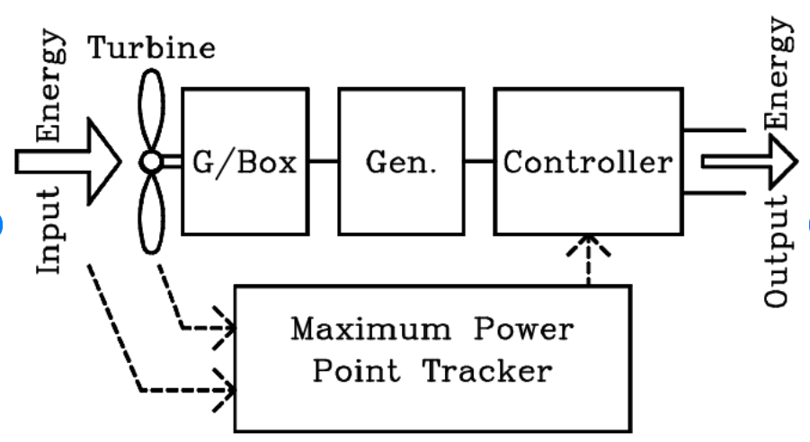

Lohith • B.Tech 3rd Year • SRM University
This activity explores how tidal energy can be used to generate electricity using a barrage system. The rise and fall of tides create potential energy, which is converted into mechanical and electrical energy through turbines and generators.
